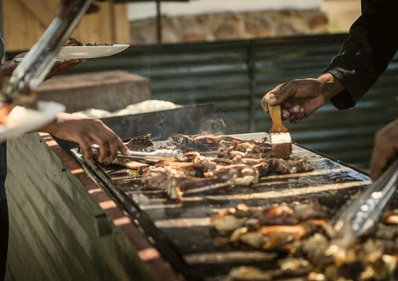
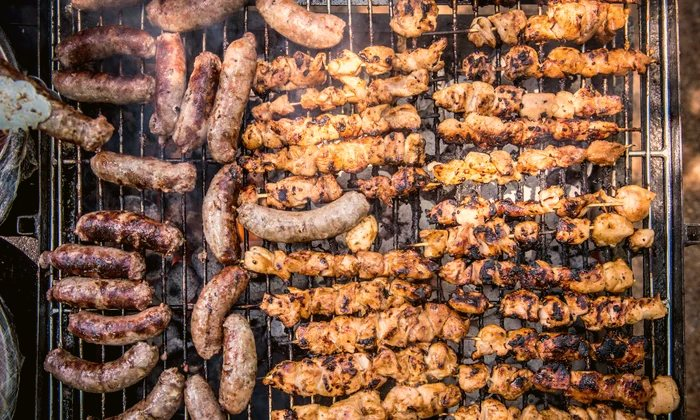

Love a backyard cookout?
Start with kabobs.
Beef, chicken or mushroom, marinated in house spices and charred over live charcoal. The smoke and char you know, with new spices.
Add kabobs to my quoteLive fire, charcoal smoke and family recipes. For more than 20 years we've grilled kabobs, lamb and steak over the coals and simmered Malian stews from whole, natural ingredients. Now we cater them across Philadelphia, for events big and small.

Meat charred over the coals, rice cooked red with tomato, greens simmered low and slow, flaky hand pies: if you've been to an American cookout, you already know these flavors. Pick what you love and we'll show you where to start.
I love…
Love a backyard cookout?
Beef, chicken or mushroom, marinated in house spices and charred over live charcoal. The smoke and char you know, with new spices.
Add kabobs to my quote
FD Grill is a family business, rooted in our heritage, in live-fire cooking and in the beauty of food made from whole, natural ingredients.
For more than 20 years we've cooked the dishes we grew up with: kabobs marinated in house spices and charred over the coals, stews that simmer for hours, pastry folded by hand. Now we're growing: we're building a full kitchen at our Philadelphia location and opening it for sit-down dining in 2027. Our catering carries on as always.
These are our family's recipes, cooked the way we cook them at home. Nothing toned down, nothing dressed up.
Not sure where to begin? These three are where we'd start your menu.
Beef, chicken or mushroom, marinated in house spices, then charred over live charcoal until the edges crisp. Built for a crowd.

Cassava leaf, saka-saka or fakoye, slow-cooked with meat and served with white rice or fonio.

Crispy West African spring rolls with glass noodles, mushrooms and beef or chicken. With sweet chili sauce and house salad.
Feed your guests the way we feed family: kabobs and lamb straight from the coals, flaky patté, slow-simmered peanut and leaf stews, fresh bissap and ginger juice. Tell us about your event, big or small, and we'll build a menu around it.


Rather talk it through? Call (610) 256-9268
Or email fdgrillllc@gmail.com
Announcing our dining room
After more than 20 years of cooking for Philadelphia, we're starting a new chapter. We already have our home here; now we're building a full kitchen inside it, so you can sit down and eat with us. Catering carries on as always while we build.